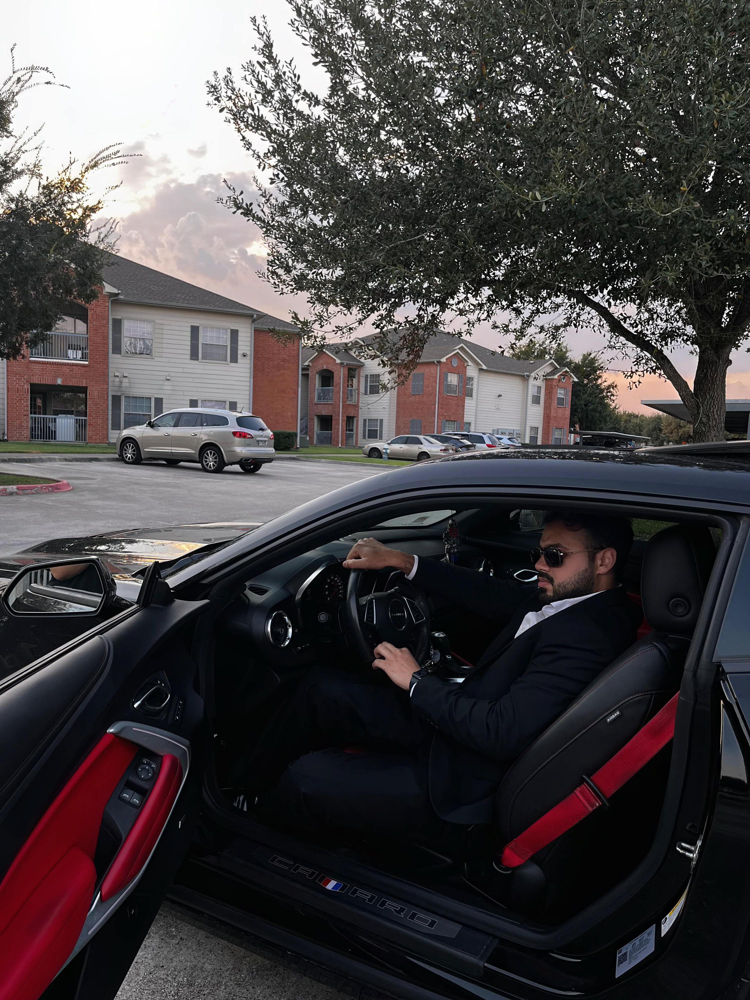
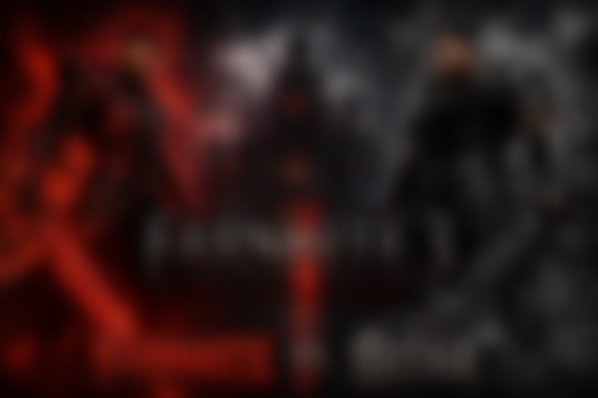
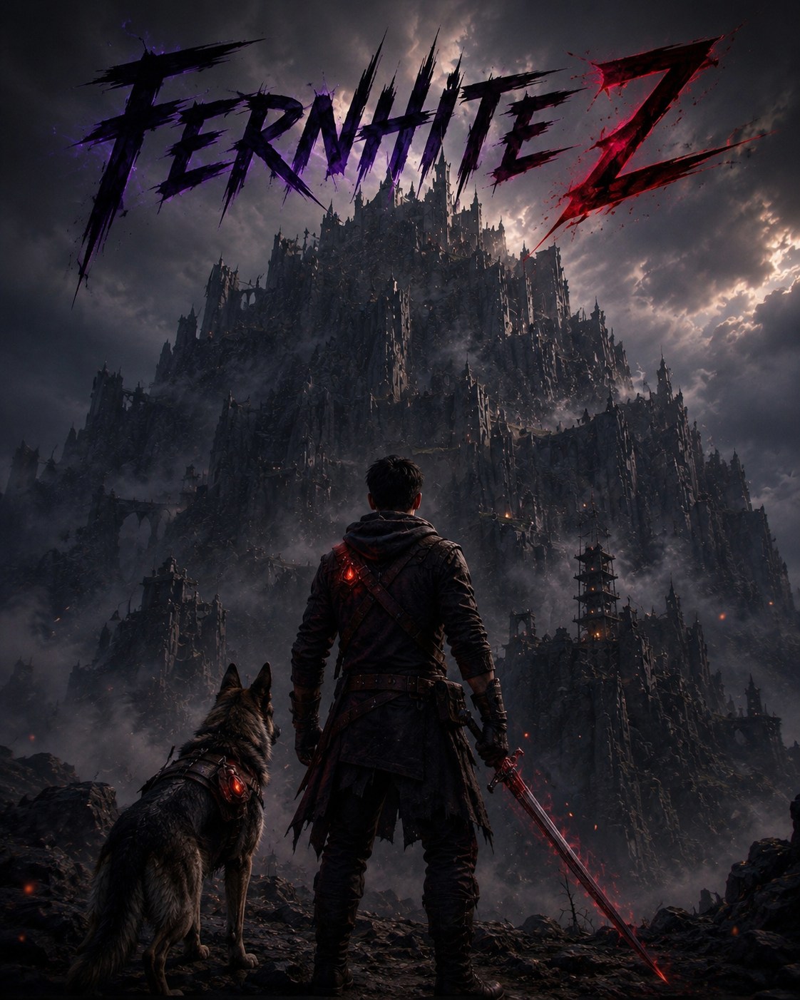
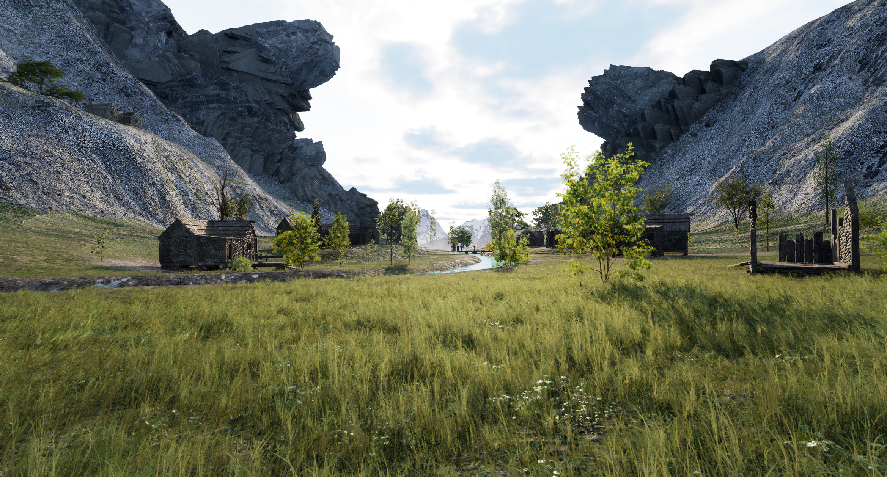
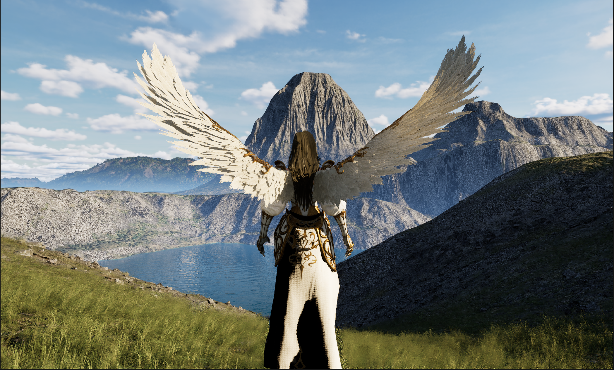
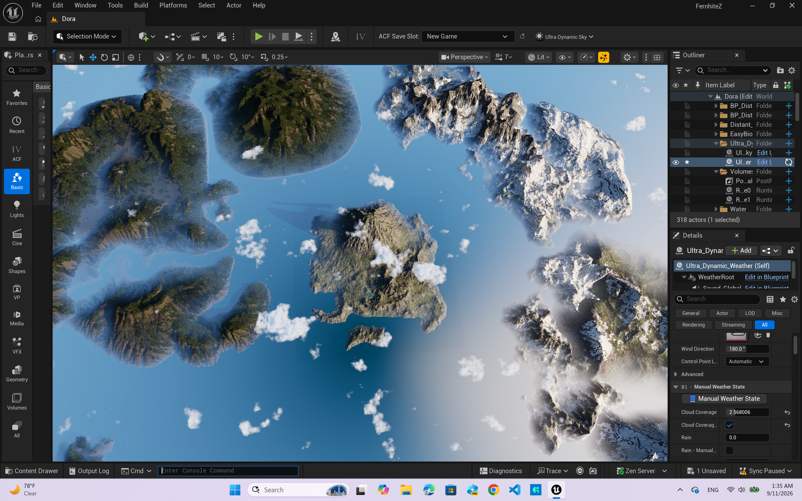
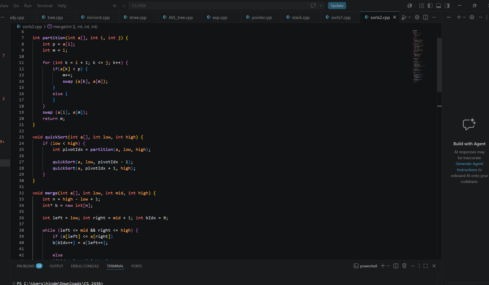

Software Engineer and Gameplay System Developer and Designer. Blueprint architecture for interactive mechanics and algorithms.

The World of Fernhite is a dark fantasy universe filled with ruined lands, different ages, broken timelines, mysterious characters, hidden lore, and a castle above the sky. More stories and characters lore will be shared soon.

Fernhite Z is a cinematic Unreal Engine adventure set beneath a blood-red moon in a fractured world consumed by mystery and chaos. The game takes place 2.4 million years before the main events of Fernhite saga. Zigi and his loyal dog, Ziad, begin a dangerous journey driven by ambition, destiny, and the beliefs that define who they are. As they travel through forgotten lands, face impossible choices, and uncover the truth behind the legendary Farnhite, every step pushes them closer to the edge of the timeline. As the influence of Farnhite spreads through Zigi mind, reality itself begins to bend. Sunrises arrive too soon, nights seem to last forever, and the line between past, present, and future slowly fades. The world drifts into a dreamlike state where time no longer follows its natural path. But how much can a man sacrifice in pursuit of his beliefs? Will Zigi had enough! More information and teasers about the game will be shared soon.




Software engineering projects, algorithms, data structures, Unreal Engine systems, gameplay mechanics, and future game development work will be showcased here.
Email: aaldahiree@gmail.com
Cell Phone: 281-409-4011
GitHub: Aldahireee